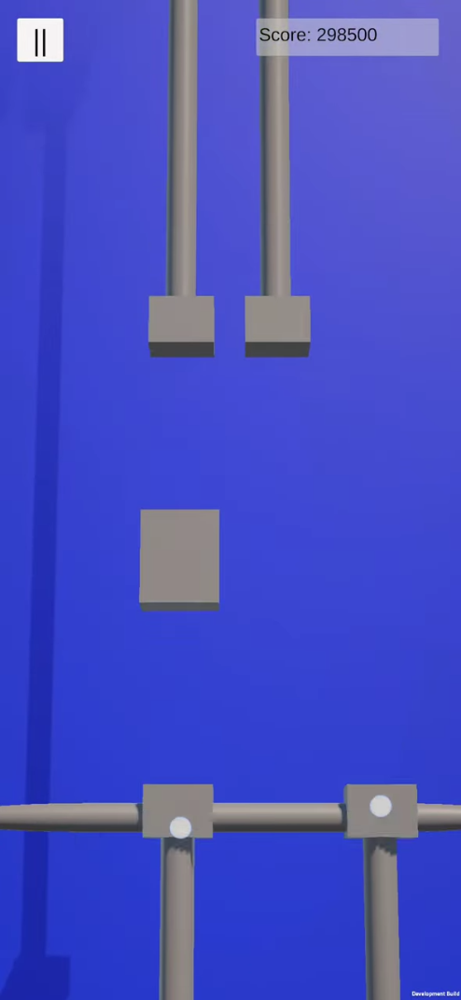

Compact Rhythm (Mobile Game Development)

Mobile rhythm game inspired by the falling tiles genre. Features music composed and arranged by me.
Key Features
- Save Game: I never worked on a save feature before now and here I was able to understand what data needed to be saved and when. I also implemented a regular auto save as is good practice for mobile games.
- Different Tile Types: This required a unique control scheme where swipes were detected in certain directions and holding down would work for long tiles.
- Ads Implementation: For monetisation practices, there is a system for ads to appear at the start of the game and also after game losses. There’s also rewarding ads where play tokens can be earned by watching an ad. Finally, ads can be removed by making an in-app purchase which right now is just dummy logic and doesn’t actually connect to apple pay or google pay.